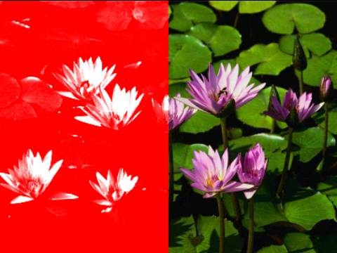

- java.lang.Object
-
- com.madrobot.graphics.bitmap.ColorFilters
-
public class ColorFilters extends Object
Bitmap texture filters* Invert

Solarize

Sepia
Sepia with thedepthof 10.
Quantize
With 128 Colors With 256 Colors 

Glow
Glow using theglowAmountof0.5andglowRadiusof2

Oil Paint

Plasma

Temperature
temperatureset to 8500.
Note:The filter is applied to the first half of the image only.
Tritone
Tritone with theshadowColorColor.GRAY, themidColorColor.BLUE and thehighColorof Color.RED.
Note:The filter is applied to the first half of the image only.
Mix Channels
Mix channels filter applied by neglecting the green channel and blending it with red.
Note:The filter is applied to the first half of the image only.

* Stamp
Stamp filter with thelowerColoras white ,upperColoras red,thresholdandsoftnessare both 0.5.
Note:The filter is applied to the first half of the image only.

-
-
Constructor Summary
Constructors Constructor and Description ColorFilters()
-
Method Summary
Methods Modifier and Type Method and Description static BitmapapplyGlow(Bitmap src, float glowAmount, float blurRadius, boolean processAlpha, boolean premultiplyAlpha, Bitmap.Config outputConfig)A filter which adds Gaussian blur to Bitmap, producing a glowing effect.static BitmapapplyHighPass(Bitmap src, float radius, boolean processAlpha, boolean premultiplyAlpha, Bitmap.Config outputConfig)Gaussian high pass filter.static BitmapapplySepia(Bitmap bitmap, Integer depth, OutputConfiguration outputConfig)Apply sepia (brown) filtersstatic BitmapdecreaseColorDepth(Bitmap bitmap, int bitOffset, OutputConfiguration outputConfig)Decrease the color depth of the given bitmapstatic BitmapgrayScale(Bitmap src, int saturation, OutputConfiguration outputConfig)Convertsstatic Bitmapinvert(Bitmap bitmap, OutputConfiguration outputConfig)Invert the bitmap's colors.static BitmapmixChannels(Bitmap src, int blueGreen, int intoRed, int redBlue, int intoGreen, int greenRed, int intoBlue, OutputConfiguration outputConfig)A filter which allows the red, green and blue channels of an image to be mixed into each other.static BitmapoilPaint(Bitmap src, int range, int levels, Bitmap.Config outputConfig)A filter which produces a "oil-painting" effect.static Bitmapplasma(Bitmap src, float turbulence, boolean useImageColors, boolean useColormap, Bitmap.Config outputConfig)static Bitmapposterize(Bitmap bitmap, int depth, OutputConfiguration outputConfig)Poseterize the given bitmapstatic Bitmapquantize(Bitmap src, int numColors, boolean dither, boolean serpentine, Bitmap.Config outputConfig)A filter which quantizes an image to a set number of colorsstatic Bitmapsaturate(Bitmap bitmap, int percent, OutputConfiguration outputConfig)Saturate the given bitmapstatic BitmapsetTransparency(Bitmap bitmap, int level, OutputConfiguration outputConfig)Set the transparency of an imagestatic Bitmapsolarize(Bitmap src, OutputConfiguration outputConfig)static Bitmapstamp(Bitmap src, int lowerColor, int upperColor, float threshold, float softness, OutputConfiguration outputConfig)A filter which produces a rubber-stamp type of effect.static Bitmaptemperature(Bitmap src, float temperature, OutputConfiguration outputConfig)Set the temperature of the imagestatic Bitmaptint(Bitmap bitmap, int tintDegree, Bitmap.Config config)Tint the given bitmapstatic Bitmaptritone(Bitmap src, int shadowColor, int midColor, int highColor, OutputConfiguration outputConfig)A filter which performs a tritone conversion on an image.
-
-
-
Method Detail
-
posterize
public static final Bitmap posterize(Bitmap bitmap, int depth, OutputConfiguration outputConfig)Poseterize the given bitmap- Parameters:
bitmap-depth- Posterization depthoutputConfig- Bitmap configuration of the output bitmap- Returns:
-
setTransparency
public static final Bitmap setTransparency(Bitmap bitmap, int level, OutputConfiguration outputConfig)Set the transparency of an image- Parameters:
bitmap-level- between 0 and 256. 0 indicates fully transparent and 256 indicates its fully opaqueoutputConfig-- Returns:
-
invert
public static final Bitmap invert(Bitmap bitmap, OutputConfiguration outputConfig)Invert the bitmap's colors.- Parameters:
bitmap-outputConfig- Bitmap configuration of the output bitmap- Returns:
-
applySepia
public static final Bitmap applySepia(Bitmap bitmap, Integer depth, OutputConfiguration outputConfig)Apply sepia (brown) filters- Parameters:
bitmap-depth- Sepia depth. values between 1-100 provide an optimal output.outputConfig- Bitmap configuration of the output bitmap- Returns:
-
saturate
public static final Bitmap saturate(Bitmap bitmap, int percent, OutputConfiguration outputConfig)Saturate the given bitmap- Parameters:
bitmap-percent-outputConfig-- Returns:
-
quantize
public static Bitmap quantize(Bitmap src, int numColors, boolean dither, boolean serpentine, Bitmap.Config outputConfig)A filter which quantizes an image to a set number of colorsuseful for producing images which are to be encoded using an index color model. The filter can perform Floyd-Steinberg error-diffusion dithering if required. At present, the quantization is done using an octtree algorithm but I eventually hope to add more quantization methods such as median cut. Note: at present, the filter produces an image which uses the RGB color model (because the application it was written for required it).
- Parameters:
src-numColors- the number of colors to quantize to. Usually:256dither- Set whether to use dithering or not. If not, the image is posterized.serpentine- Set whether to use a serpentine pattern for return or not. This can reduce 'avalanche' artifacts in the output.outputConfig-- Returns:
-
applyGlow
public static Bitmap applyGlow(Bitmap src, float glowAmount, float blurRadius, boolean processAlpha, boolean premultiplyAlpha, Bitmap.Config outputConfig)A filter which adds Gaussian blur to Bitmap, producing a glowing effect.- Parameters:
src- Source BitmapglowAmount- Amount of glow. Should be from 0 to 1.Recommended:0.5fblurRadius- recommended :2processAlpha- process alpha for this image, recommended:truepremultiplyAlpha- premulitply alpha. recommended:trueoutputConfig-- Returns:
-
applyHighPass
public static Bitmap applyHighPass(Bitmap src, float radius, boolean processAlpha, boolean premultiplyAlpha, Bitmap.Config outputConfig)Gaussian high pass filter.- Parameters:
src-radius- recommended: 10processAlpha-premultiplyAlpha-outputConfig-- Returns:
-
plasma
public static Bitmap plasma(Bitmap src, float turbulence, boolean useImageColors, boolean useColormap, Bitmap.Config outputConfig)- Parameters:
src-turbulence- Specifies the turbulence of the texture. Min Value: 0,Max value: 10. recommended:1.0useImageColors- recommended: false.useColormap- Use color map for this filter. recommended:false.outputConfig-- Returns:
-
tint
public static Bitmap tint(Bitmap bitmap, int tintDegree, Bitmap.Config config)Tint the given bitmap- Parameters:
bitmap-tintDegree- degree to tint the bitmapconfig- for the output bitmap- Returns:
-
grayScale
public static final Bitmap grayScale(Bitmap src, int saturation, OutputConfiguration outputConfig)Converts- Parameters:
src-saturation- Grayscale saturation leveloutputConfig- Bitmap configuration of the output bitmap- Returns:
-
decreaseColorDepth
public static Bitmap decreaseColorDepth(Bitmap bitmap, int bitOffset, OutputConfiguration outputConfig)Decrease the color depth of the given bitmap- Parameters:
pixel-bitOffset-- Returns:
-
oilPaint
public static Bitmap oilPaint(Bitmap src, int range, int levels, Bitmap.Config outputConfig)A filter which produces a "oil-painting" effect.Extremely CPU intensive. Run on dedicated thread.
- Parameters:
src-range- Range of effect in pixels. Recommended:3.levels- Set the number of levels for the effect. Recommended:256outputConfig-- Returns:
-
temperature
public static Bitmap temperature(Bitmap src, float temperature, OutputConfiguration outputConfig)Set the temperature of the image- Parameters:
src-temperature- of the image min:1000 max:10000outputConfig-- Returns:
-
tritone
public static Bitmap tritone(Bitmap src, int shadowColor, int midColor, int highColor, OutputConfiguration outputConfig)A filter which performs a tritone conversion on an image.Given three colors for shadows, midtones and highlights, it converts the image to grayscale and then applies a color mapping based on the colors.
- Parameters:
src-shadowColor-midColor-highColor-outputConfig-- Returns:
-
mixChannels
public static Bitmap mixChannels(Bitmap src, int blueGreen, int intoRed, int redBlue, int intoGreen, int greenRed, int intoBlue, OutputConfiguration outputConfig)A filter which allows the red, green and blue channels of an image to be mixed into each other.Any particular color channel can be neglected by setting it to 0. and setting the
intoXXvalue to 255.- Parameters:
src-blueGreen- amount of blue to mix into green. min:0 max:255intoRed- corresponding level into red. min:0 max:255redBlue- amount of red to mix into blue. min:0 max:255intoGreen- corresponding level into green. min:0 max:255greenRed- amount of green to mix into red. min:0 max:255intoBlue- corresponding level into blue. min:0 max:255outputConfig-- Returns:
-
solarize
public static Bitmap solarize(Bitmap src, OutputConfiguration outputConfig)
-
stamp
public static Bitmap stamp(Bitmap src, int lowerColor, int upperColor, float threshold, float softness, OutputConfiguration outputConfig)A filter which produces a rubber-stamp type of effect.- Parameters:
src-lowerColor-upperColor- Set the color to be used for pixels above the upper threshold.threshold- the color to be used for pixels below the lower threshold. min:0 max:1softness- the softness of the effect. min:0 max:1outputConfig-- Returns:
-
-